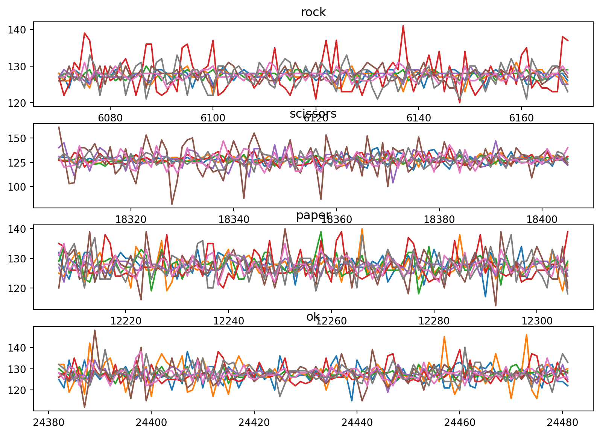
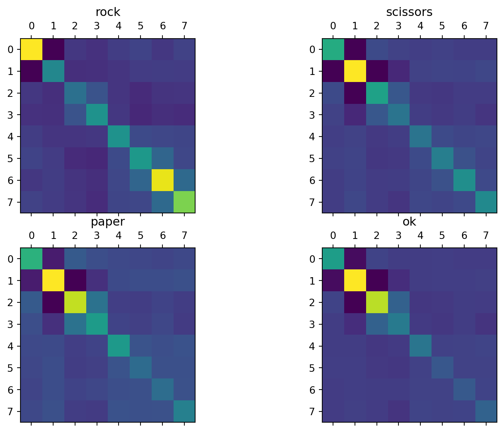
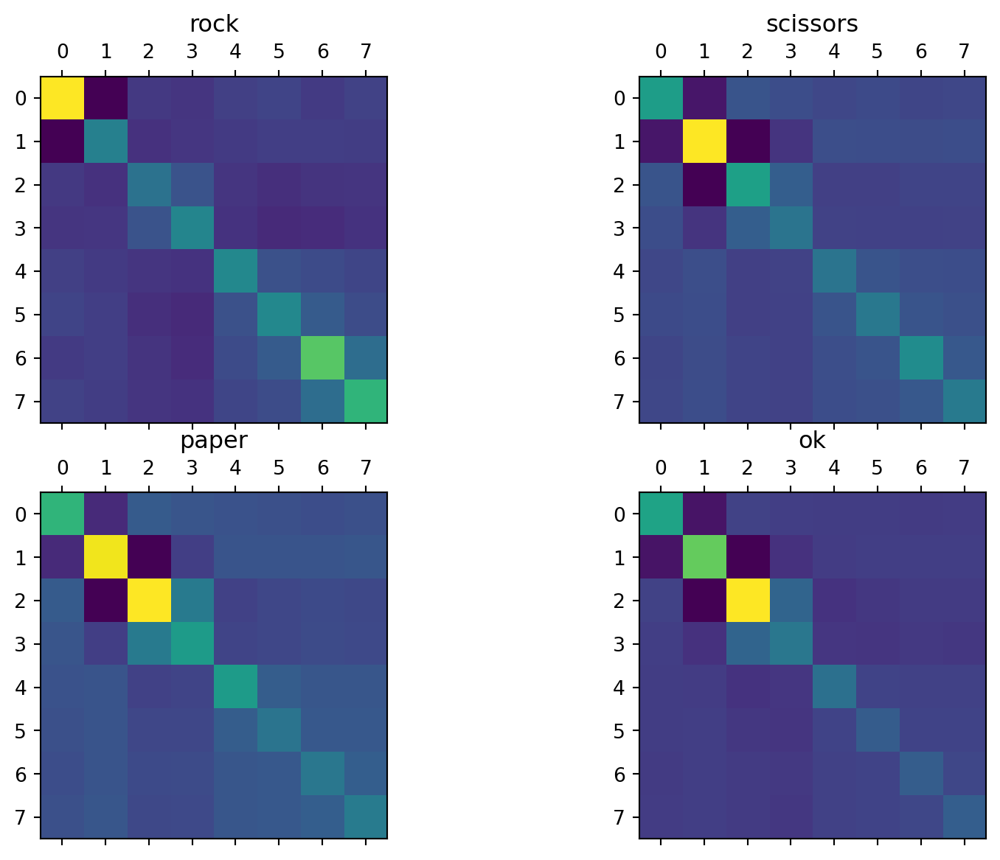
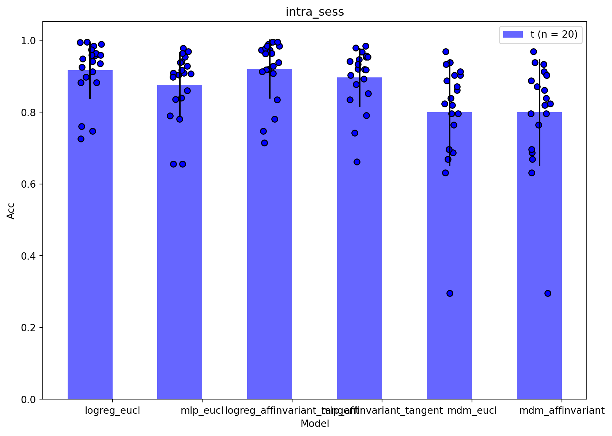

Show/Hide Code
import matplotlib
import matplotlib.pyplot as plt
import geomstats.backend as gs
matplotlib.interactive(True)
gs.random.seed(2021)INFO: Using numpy backendGeomstats is a Python package for computations, statistics, machine learning, and deep learning on manifolds (Miolane et al. 2020).
The package is organized into two main modules: geometry and learning. The module geometry implements differential geometry: manifolds, Lie groups, fiber bundles, shape spaces, information manifolds, Riemannian metrics, and more. The module learning implements statistics and learning algorithms for data on manifolds. Users can choose between backends: NumPy, Autograd, or PyTorch.
This notebook is adapted from here
In this notebook we are using EMG time series collected by 8 electrodes placed on the arm skin. We are going to show how to:

The data are acquired from somOS-interface: an sEMG armband that allows you to interact via bluetooth with an Android smartphone (you can contact Marius Guerard (marius.guerard@gmail.com) or Renaud Renault (renaud.armand.renault@gmail.com) for more info on how to make this kind of armband yourself).
An example of application is to record static signs that are linked with different actions (moving a cursor and clicking, sign recognition for command based personal assistants, …). In these experiments, we want to evaluate the difference in performance (measured as the accuracy of sign recognition) between three different real life situations where we change the conditions of training (when user record signs or “calibrate” the device) and testing (when the app guess what sign the user is doing):
To simulate these situations, we record data from two different users (rr and mg) and in two different sessions (s1 or s2). The user put the bracelet before every session and remove it after every session.
Quick description of the data:
Note: Another interesting use case, not explored in this notebook, would be to test what is the accruacy when calibrating, removing the armband and giving it to someone else that is calibrating it on its own arm before testing it. The idea being that transfer learning might help getting better results (or faster calibration) than calibrating on one user.
import matplotlib
import matplotlib.pyplot as plt
import geomstats.backend as gs
matplotlib.interactive(True)
gs.random.seed(2021)INFO: Using numpy backendN_ELECTRODES = 8
N_SIGNS = 4import geomstats.datasets.utils as data_utils
data = data_utils.load_emg()data.head()| time | c0 | c1 | c2 | c3 | c4 | c5 | c6 | c7 | label | exp | |
|---|---|---|---|---|---|---|---|---|---|---|---|
| 0 | 23 | 127 | 123 | 128 | 134 | 125 | 128 | 130 | 124 | rest | mg_s1 |
| 1 | 28 | 126 | 130 | 128 | 119 | 129 | 128 | 126 | 133 | rest | mg_s1 |
| 2 | 32 | 129 | 130 | 127 | 125 | 129 | 129 | 127 | 130 | rest | mg_s1 |
| 3 | 36 | 127 | 128 | 126 | 123 | 128 | 127 | 125 | 131 | rest | mg_s1 |
| 4 | 40 | 127 | 128 | 129 | 124 | 127 | 129 | 127 | 128 | rest | mg_s1 |
fig, ax = plt.subplots(N_SIGNS, figsize=(10, 7))
label_list = ["rock", "scissors", "paper", "ok"]
for i, label_i in enumerate(label_list):
sign_df = data[data.label == label_i].iloc[:100]
for electrode in range(N_ELECTRODES):
ax[i].plot(sign_df.iloc[:, 1 + electrode])
ax[i].title.set_text(label_i)
We are removing the sign ‘rest’ for the rest of the analysis.
data = data[data.label != "rest"]import numpy as np
### Parameters.
N_STEPS = 100
LABEL_MAP = {"rock": 0, "scissors": 1, "paper": 2, "ok": 3}
MARGIN = 1000Unpacking data into arrays for batching
data_dict = {
"time": gs.array(data.time),
"raw_data": gs.array(data[["c{}".format(i) for i in range(N_ELECTRODES)]]),
"label": gs.array(data.label),
"exp": gs.array(data.exp),
}from geomstats.datasets.prepare_emg_data import TimeSeriesCovariance
cov_data = TimeSeriesCovariance(data_dict, N_STEPS, N_ELECTRODES, LABEL_MAP, MARGIN)
cov_data.transform()We check that these matrics belong to the space of SPD matrices.
from geomstats.geometry.spd_matrices import SPDMatrices
manifold = SPDMatrices(N_ELECTRODES, equip=False)gs.all(manifold.belongs(cov_data.covs))Truefig, ax = plt.subplots(2, 2, figsize=(10, 7))
for label_i, i in cov_data.label_map.items():
label_ids = np.where(cov_data.labels == i)[0]
sign_cov_mat = cov_data.covs[label_ids]
mean_cov = np.mean(sign_cov_mat, axis=0)
ax[i // 2, i % 2].matshow(mean_cov)
ax[i // 2, i % 2].title.set_text(label_i)
Looking at the euclidean average of the spd matrices for each sign, does not show a striking difference between 3 of our signs (scissors, paper, and ok). Minimum Distance to Mean (MDM) algorithm will probably performed poorly if using euclidean mean here.
from geomstats.geometry.spd_matrices import SPDAffineMetric
from geomstats.learning.frechet_mean import FrechetMeanmanifold.equip_with_metric(SPDAffineMetric)
mean_affine = FrechetMean(manifold)fig, ax = plt.subplots(2, 2, figsize=(10, 7))
for label_i, i in cov_data.label_map.items():
label_ids = np.where(cov_data.labels == i)[0]
sign_cov_mat = cov_data.covs[label_ids]
mean_affine.fit(X=sign_cov_mat)
mean_cov = mean_affine.estimate_
ax[i // 2, i % 2].matshow(mean_cov)
ax[i // 2, i % 2].title.set_text(label_i)
We see that the average matrices computed using the affine invariant metric are now more differenciated from each other and can potentially give better results, when using MDM to predict the sign linked to a matrix sample.
We are now going to train some classifiers on those matrices to see how we can accurately discriminate these 4 hand positions. The baseline accuracy is defined as the accuracy we get by randomly guessing the signs. In our case, the baseline accuracy is 25%.
from sklearn.linear_model import LogisticRegression
from sklearn.model_selection import cross_validate
from sklearn.pipeline import Pipeline
from sklearn.preprocessing import StandardScaler# Hiding the numerous sklearn warnings
import warnings
warnings.filterwarnings("ignore")import tensorflow as tf
from scikeras.wrappers import KerasClassifierN_EPOCHS is the number of epochs on which to train the MLP. Recommended is ~100
N_EPOCHS = 10
N_FEATURES = int(N_ELECTRODES * (N_ELECTRODES + 1) / 2)In this first part we are training our model on the same session that we are testing it on. In real life, it corresponds to a user calibrating his armband right before using it. To do this, we are splitting every session in k-folds, training on \((k-1)\) fold to test on the \(k^{th}\) last fold.
class ExpResults:
"""Class handling the score collection and plotting among the different experiments."""
def __init__(self, exps):
self.exps = exps
self.results = {}
self.exp_ids = {}
# Compute the index corresponding to each session only once at initialization.
for exp in set(self.exps):
self.exp_ids[exp] = np.where(self.exps == exp)[0]
def add_result(self, model_name, model, X, y):
"""Add the results from the cross validated pipeline.
For the model 'pipeline', it will add the cross validated results of every session in the model_name
entry of self.results.
Parameters
----------
model_name : str
Name of the pipeline/model that we are adding results from.
model : sklearn.pipeline.Pipeline
sklearn pipeline that we are evaluating.
X : array
data that we are ingesting in the pipeline.
y : array
labels corresponding to the data.
"""
self.results[model_name] = {
"fit_time": [],
"score_time": [],
"test_score": [],
"train_score": [],
}
for exp in self.exp_ids.keys():
ids = self.exp_ids[exp]
exp_result = cross_validate(
pipeline, X[ids], y[ids], return_train_score=True
)
for key in exp_result.keys():
self.results[model_name][key] += list(exp_result[key])
print(
"Average training score: {:.4f}, Average test score: {:.4f}".format(
np.mean(self.results[model_name]["train_score"]),
np.mean(self.results[model_name]["test_score"]),
)
)
def plot_results(
self,
title,
variables,
err_bar=None,
save_name=None,
xlabel="Model",
ylabel="Acc",
):
"""Plot bar plot comparing the different pipelines' results.
Compare the results added previously using the 'add_result' method with bar plots.
Parameters
----------
title : str
Title of the plot.
variables : list of array
List of the variables to plot (e.g. train_score, test_score,...)
err_bar : list of float
list of error to use for plotting error bars. If None, std is used by default.
save_name : str
path to save the plot. If None, plot is not saved.
xlabel : str
Label of the x-axis.
ylabel : str
Label of the y-axis.
"""
### Some defaults parameters.
w = 0.5
colors = ["b", "r", "gray"]
### Reshaping the results for plotting.
x_labels = self.results.keys()
list_vec = []
for variable in variables:
list_vec.append(
np.array(
[self.results[model][variable] for model in x_labels]
).transpose()
)
rand_m1 = lambda size: np.random.random(size) * 2 - 1
### Plots parameters.
label_loc = np.arange(len(x_labels))
center_bar = [w * (i - 0.5) for i in range(len(list_vec))]
### Plots values.
avg_vec = [np.nanmean(vec, axis=0) for vec in list_vec]
if err_bar is None:
err_bar = [np.nanstd(vec, axis=0) for vec in list_vec]
### Plotting the data.
fig, ax = plt.subplots(figsize=(10, 7))
for i, vec in enumerate(list_vec):
label_i = variable[i] + " (n = {})".format(len(vec))
ax.bar(
label_loc + center_bar[i],
avg_vec[i],
w,
label=label_i,
yerr=err_bar[i],
color=colors[i],
alpha=0.6,
)
for j, x in enumerate(label_loc):
ax.scatter(
(x + center_bar[i]) + rand_m1(vec[:, j].size) * w / 4,
vec[:, j],
color=colors[i],
edgecolor="k",
)
# Add some text for labels, title and custom x-axis tick labels, etc.
ax.set_xlabel(xlabel)
ax.set_ylabel(ylabel)
ax.set_title(title)
ax.set_xticks(label_loc)
ax.set_xticklabels(x_labels)
ax.legend()
plt.legend()
### Saving the figure with a timestamp as a name.
if save_name is not None:
plt.savefig(save_name)exp_arr = data.exp.iloc[cov_data.batches]
intra_sessions_results = ExpResults(exp_arr)pipeline = Pipeline(
steps=[
("standardize", StandardScaler()),
("logreg", LogisticRegression(solver="lbfgs", multi_class="multinomial")),
]
)
intra_sessions_results.add_result(
model_name="logreg_eucl", model=pipeline, X=cov_data.covecs, y=cov_data.labels
)Average training score: 0.9938, Average test score: 0.9168def create_model(weights="initial.weights.h5", n_features=N_FEATURES, n_signs=N_SIGNS):
"""Create model.
Function to create model, required for using KerasClassifier and wrapp a Keras model inside a
scikitlearn form.
We added a weight saving/loading to remove the randomness of the weight initialization (for better comparison).
"""
model = tf.keras.models.Sequential(
[
tf.keras.layers.Dense(
n_features, activation="relu", input_shape=(n_features,)
),
tf.keras.layers.Dropout(0.2),
tf.keras.layers.Dense(17, activation="relu"),
tf.keras.layers.Dropout(0.2),
tf.keras.layers.Dense(n_signs, activation="softmax"),
]
)
model.compile(
loss="sparse_categorical_crossentropy",
optimizer="rmsprop",
metrics=["accuracy"],
)
if weights is None:
model.save_weights("initial.weights.h5")
else:
model.load_weights(weights)
return model
def create_model_covariance(weights="initial.weights.h5"):
"""Create model covariance."""
return create_model(weights=weights, n_features=N_FEATURES)Use the line below to generate the ‘initial.weights.h5’ file
generate_weights = create_model(weights=None)pipeline = Pipeline(
steps=[
("standardize", StandardScaler()),
("mlp", KerasClassifier(build_fn=create_model, epochs=N_EPOCHS, verbose=0)),
]
)
intra_sessions_results.add_result(
model_name="mlp_eucl", model=pipeline, X=cov_data.covecs, y=cov_data.labels
)Average training score: 0.9598, Average test score: 0.8768from geomstats.learning.preprocessing import ToTangentSpace
pipeline = Pipeline(
steps=[
("feature_ext", ToTangentSpace(manifold)),
("standardize", StandardScaler()),
("logreg", LogisticRegression(solver="lbfgs", multi_class="multinomial")),
]
)
intra_sessions_results.add_result(
model_name="logreg_affinvariant_tangent",
model=pipeline,
X=cov_data.covs,
y=cov_data.labels,
)Average training score: 0.9959, Average test score: 0.9200pipeline = Pipeline(
steps=[
("feature_ext", ToTangentSpace(manifold)),
("standardize", StandardScaler()),
(
"mlp",
KerasClassifier(
build_fn=create_model_covariance, epochs=N_EPOCHS, verbose=0
),
),
]
)
intra_sessions_results.add_result(
model_name="mlp_affinvariant_tangent",
model=pipeline,
X=cov_data.covs,
y=cov_data.labels,
)Average training score: 0.9744, Average test score: 0.8963from geomstats.geometry.spd_matrices import SPDEuclideanMetric
from geomstats.learning.mdm import RiemannianMinimumDistanceToMean
manifold.equip_with_metric(SPDEuclideanMetric)
pipeline = Pipeline(
steps=[
(
"clf",
RiemannianMinimumDistanceToMean(manifold),
)
]
)
intra_sessions_results.add_result(
model_name="mdm_eucl", model=pipeline, X=cov_data.covs, y=cov_data.labels
)Average training score: 0.8498, Average test score: 0.7999pipeline = Pipeline(
steps=[
(
"clf",
RiemannianMinimumDistanceToMean(manifold),
)
]
)
intra_sessions_results.add_result(
model_name="mdm_affinvariant", model=pipeline, X=cov_data.covs, y=cov_data.labels
)Average training score: 0.8498, Average test score: 0.7999intra_sessions_results.plot_results("intra_sess", ["test_score"])